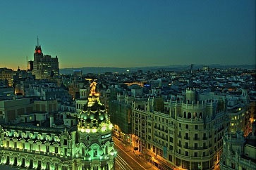

Общие сведения об Испании
СТОЛИЦА – Мадрид
Название - Королевство Испания
По конституции с 1978 г. Испания - это демократическое и правовое государство, формой правления которого является парламентская монархия.
Время
Отстает от московского на 2 часа.
Язык
Официальный язык - испанский. Но существует несколько разновидностей испанского языка: каталонский -в Каталонии, галисийский - в Галисии, баскский - в стране Басков, валенсийский - в Валенсийском Сообществе. Также употребляются: немецкий, французский, итальянский.
Часы работы
Пункты обмена валюты в банках: с 9.00 до 14.00, в субботу - с 9.00 до 12.00, воскресенье - выходной. На главных улицах Мадрида банки открыты круглосуточно. Магазины: с 9.00 до 13.00 и с 16.00 до 20.00, (в субботу - до 12.00). С 13.00 до 16.00 - сиеста.
Территория
504,8 тыс. кв. км. Основная часть испанской территории (около 494 кв. км) находится на Пиренейском полуострове. Остальную территорию занимают Балеарские и Канарские острова. Также Испании принадлежат города Сеута и Мелилья, расположенные на севере Африки.
Климат
На южном и восточном побережье климат средиземноморский, внутри страны – умеренный. В центре Испании самое жаркое лето и самая холодная зима. На юге у подножия гор самая теплая зимняя погода во всей Европе. На Атлантическом побережье лето не такое жаркое и здесь чаще идут дожди. Пик туристического сезона приходится на июнь-октябрь.
Население
39,6 млн. человек. Средняя плотность населения в Испании составляет около 80 жителей на кв. километр. Как правило, наибольшая плотность населения наблюдается в прибрежных районах, а во внутренних районах, за исключением крупных городов, заметна тендеция к уменьшению его числа.
Религия
Католицизм
Крупнейшие города
Мадрид (3,1 млн.человек), Барселона, Валенсия, Севилья
Помимо этих известных на весь мир жемчужин Испании там находятся девять городов, объявленные ЮНЕСКО достоянием человечества. Это Сантьяго де Компостела, Альбайсин, Саламанка, Авила, Сеговия, Куэнка, Касерес, Толедо и Кордова.
Праздничные и выходные дни
- 1 января - Новый Год,
- 6 января - Богоявление,
- 19 марта - День Святого Иосифа, 15 апреля ,
- 1 мая - День Труда,
- 15 августа - Успение,
- 12 октября - День открытия Америки, День Колумба,
- 1 ноября - День Всех Святых,
- 6 декабря - День Конституции,
- 25 декабря - Рождество.
Домен .es